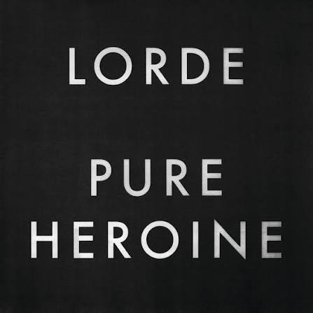
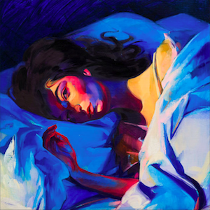
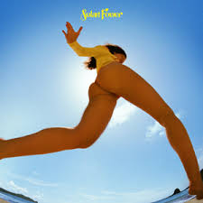

Pure Heroine

O início de tudo em 2013. O minimalismo sombrio, a crítica à realeza e o hino geracional Royals que mudou as estruturas do pop.
Explore as eras, poesias e batidas eletrônicas de uma das artistas mais geniais da música pop contemporânea.
Entrar no Club
O início de tudo em 2013. O minimalismo sombrio, a crítica à realeza e o hino geracional Royals que mudou as estruturas do pop.

A obra-prima de 2017. Um álbum conceitual intenso sobre as cores, dores e a euforia de uma festa noturna e da solidão.

A virada para 2021. Uma conexão ensolarada com a natureza, abandonando as noites urbanas por violões e calmaria.
O retorno impactante. Um trabalho intimista e maduro focado na feminilidade e em novas texturas de produção pop.